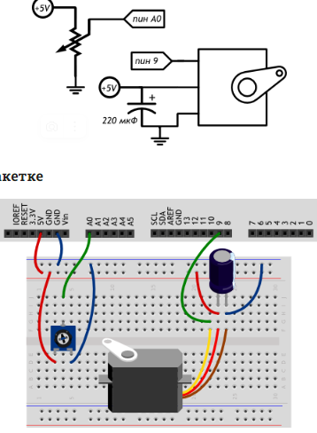

// управлять сервоприводами (англ. servo motor) самостоятельно
// не так то просто, но в стандартной библиотеке уже всё
// заготовлено, что делает задачу тривиальной
#include
#define POT_MAX_ANGLE 270.0 // макс. угол поворота потенциометра
// объявляем объект типа Servo с именем myServo. Ранее мы
// использовали int, boolean, float, а теперь точно также
// используем тип Servo, предоставляемый библиотекой. В случае
// Serial мы использовали объект сразу же: он уже был создан
// для нас, но в случае с Servo, мы должны сделать это явно.
// Ведь в нашем проекте могут быть одновременно несколько
// приводов, и нам понадобится различать их по именам
Servo myServo;
void setup()
{
// прикрепляем (англ. attach) нашу серву к 9-му пину. Явный
// вызов pinMode не нужен: функция attach сделает всё за нас
myServo.attach(9);
}
void loop()
{
int val = analogRead(A0);
// на основе сигнала понимаем реальный угол поворота движка.
// Используем вещественные числа в расчётах, но полученный
// результат округляем обратно до целого числа
int angle = int(val / 1024.0 * POT_MAX_ANGLE);
// обычная серва не сможет повторить угол потенциометра на
// всём диапазоне углов. Она умеет вставать в углы от 0° до
// 180°. Ограничиваем угол соответствующе
angle = constrain(angle, 0, 180);
// и, наконец, подаём серве команду встать в указанный угол
myServo.write(angle);
}